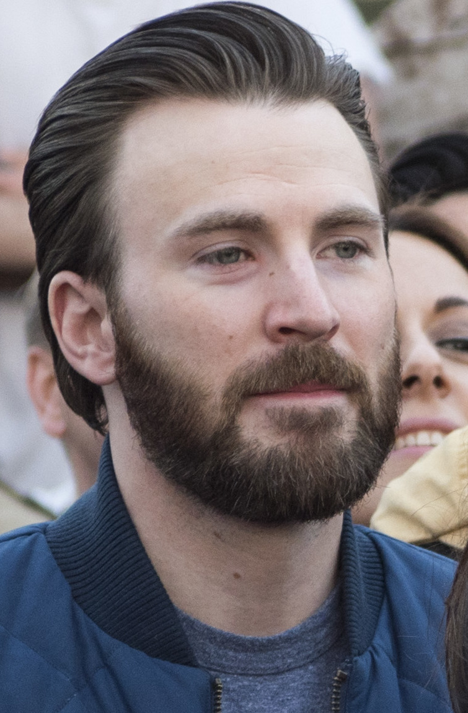

Chris Evans

Lien vers le personnage de Steve Rogers/ Captain America
Chris Evans est un acteur américain, né le 13 juin 1981 à Boston (Massachusetts)2.
Il accède à la célébrité mondiale en tenant le rôle de Steve Rogers / Captain America entre 2011 et 2019 dans l'univers cinématographique Marvel. Il avait précédemment interprété un autre héros Marvel, Johnny Storm / la Torche humaine dans Les Quatre Fantastiques et sa suite.
Filmographie
- 2011 : Captain America: First Avenger de Joe Johnston : Steve Rogers / Captain America
- 2012 : Avengers de Joss Whedon : Steve Rogers / Captain America
- 2013 : Thor : Le Monde des ténèbres d'Alan Taylor : Steve Rogers / Captain America (caméo, une des métamorphoses de Loki)
- 2014 : Captain America : Le Soldat de l'hiver d'Anthony et Joe Russo : Steve Rogers / Captain America
- 2015 : Avengers : L'Ère d'Ultron de Joss Whedon : Steve Rogers / Captain America
- 2015 : Ant-Man de Peyton Reed : Steve Rogers / Captain America (caméo scène post-générique, non crédité)
- 2016 : Captain America: Civil War d’Anthony et Joe Russo : Steve Rogers / Captain America
- 2017 : Spider-Man: Homecoming de Jon Watts : Steve Rogers / Captain America (caméo)
- 2018 : Avengers: Infinity War de Anthony et Joe Russo : Steve Rogers / Captain America
- 2019 : Captain Marvel d'Anna Boden et Ryan Fleck : Steve Rogers / Captain America (caméo scène post-générique, non crédité)
- 2019 : Avengers: Endgame d'Anthony et Joe Russo : Steve Rogers / Captain America
Vie privée
Durant l'automne 2001, Chris Evans commence à fréquenter l'actrice Jessica Biel. Le couple s'est séparé courant 2006 après 5 ans de relation amoureuse.
En 2007, il entretient une relation amoureuse avec l'actrice Minka Kelly. Le couple se sépare quelques mois plus tard puis se remet à nouveau ensemble courant 2012. Ils ont par la suite définitivement rompu en octobre.
En mai 2016, il commence à fréquenter l'actrice Jenny Slate, qu'il a rencontrée sur le tournage du film Mary. Ils annoncent leur séparation en janvier 2017 mais se remettent ensemble quelques mois après, en novembre. En mars 2018, ils se séparent définitivement.
Voir aussi
Lien vers allocine